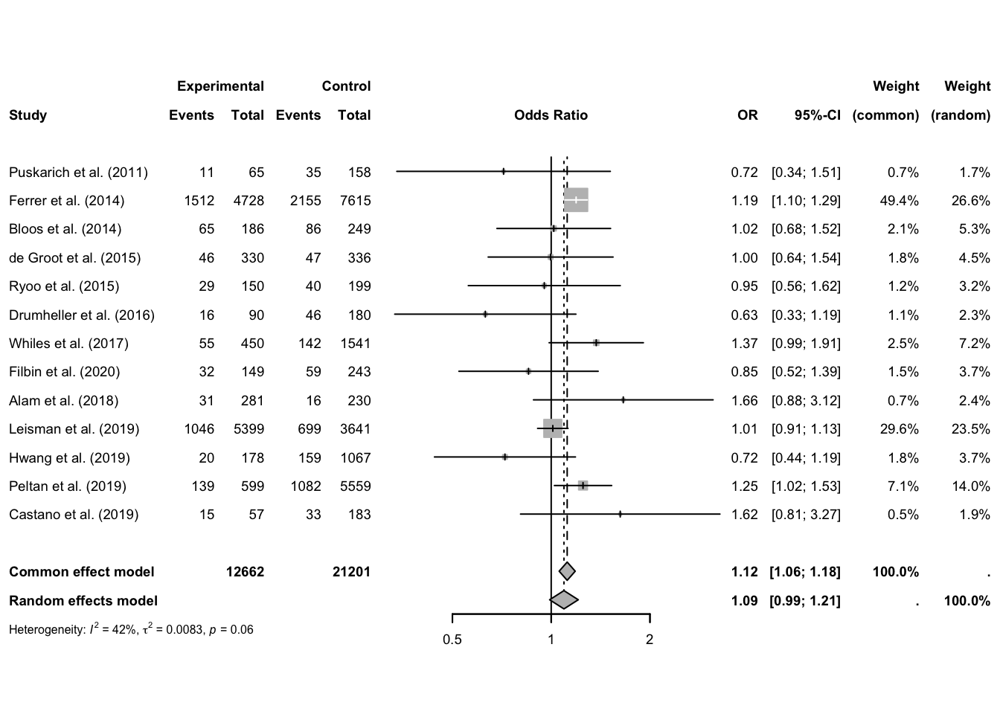
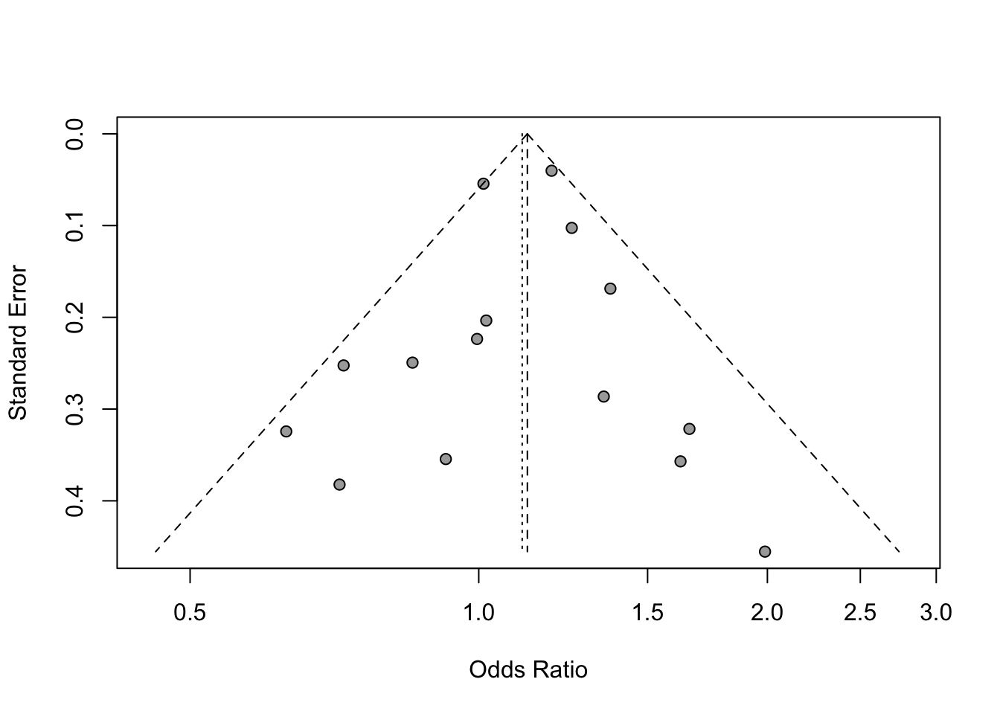

Does immediate antibiotics administration reduce sepis mortality? : Metaanalysis in R
Author
Jan Frąckowiak
Published
September 8, 2024
Introduction
This report builds on Rothroc et al. 2020 metanalysis (https://www.annemergmed.com/article/S0196-0644(20)30337-1/fulltext#tbl1fnddagger) reviewing data from 14 studies concernign the impact of immediecy of antibiotics administration in mortality among sepsis patients. Specifically the studies compare the mortatality between group of patients where antiobiotics were given in 0 to 1 hour from sepis onset (immediate administration) and the group when they were given antibiotics from 1 to 3 hour (early administration)
Publication selection criteria: concerning time spent by boys and girls with gender-related toys. Particulary the significance of the difference between the times boys spent playing with toys assocciated with girls (experimental group) is compared to time boys spent with toys associated with boys (control group). https://www.annemergmed.com/article/S0196-0644(20)30337-1/fulltext#tbl1fnddagger
Funell plot is used to visualise dispersion of differences between the studies.
Additionaly the influence of factors such as: gender of authors, justification for the gendered nature of a toy and study quality score is examined.
Additional Studies
Reading the Data
```{r}library(meta)```
Loading required package: metadat
Loading 'meta' package (version 7.0-0).
Type 'help(meta)' for a brief overview.
Readers of 'Meta-Analysis with R (Use R!)' should install
older version of 'meta' package: https://tinyurl.com/dt4y5drs
```{r}library(metafor)```
Loading required package: Matrix
Loading required package: numDeriv
Loading the 'metafor' package (version 4.6-0). For an
introduction to the package please type: help(metafor)
```{r}library(dplyr)```
Attaching package: 'dplyr'
The following objects are masked from 'package:stats':
filter, lag
The following objects are masked from 'package:base':
intersect, setdiff, setequal, union
Number of studies: k = 16
Number of observations: o = 7037.082 (o.e = 3327, o.c = 3710.082)
MD 95%-CI z p-value
Common effect model 0.0285 [ 0.0279; 0.0292] 87.70 0
Random effects model -0.0073 [-0.0328; 0.0183] -0.56 0.5764
Quantifying heterogeneity:
tau^2 = 0.0022 [0.0010; 0.0056]; tau = 0.0472 [0.0320; 0.0750]
I^2 = 99.4% [99.3%; 99.5%]; H = 12.69 [11.74; 13.71]
Test of heterogeneity:
Q d.f. p-value
2415.44 15 0
Details on meta-analytical method:
- Inverse variance method
- Restricted maximum-likelihood estimator for tau^2
- Q-Profile method for confidence interval of tau^2 and tau
Observation: We may observe significant, strong, negative differences between the average time boys spent with female toys and male toys. This suggests that empirically they are more reluctant to play with female toys.
Forest plot
```{r}m %>% forest()```

Funnel plot
```{r}m %>% funnel()```

Observation: The results are not symmetrically distributed around the average with majority on the left side which can be caused by inconsistency of sample sizes. However we observe a high prevalence of negative difference estimates with moderate standard errors which further supports the conclusion from common/random effects models.
Warning in find(i): elements of 'what' after the first will be ignored
Warning in formula.character(object, env = baseenv()): Using formula(x) is deprecated when x is a character vector of length > 1.
Consider formula(paste(x, collapse = " ")) instead.
Warning: 6 studies with NAs omitted from model fitting.
Warning: Redundant predictors dropped from the model.
Observation: We may observe that neither the justification for the gendered nature of a toy (Case definition adequate), nor Newcastle-Ottawa Score (NOS score) proved significant. Only number of female authors turned out significant and explained the effects sizes (presence of male authors also did not prove significant).